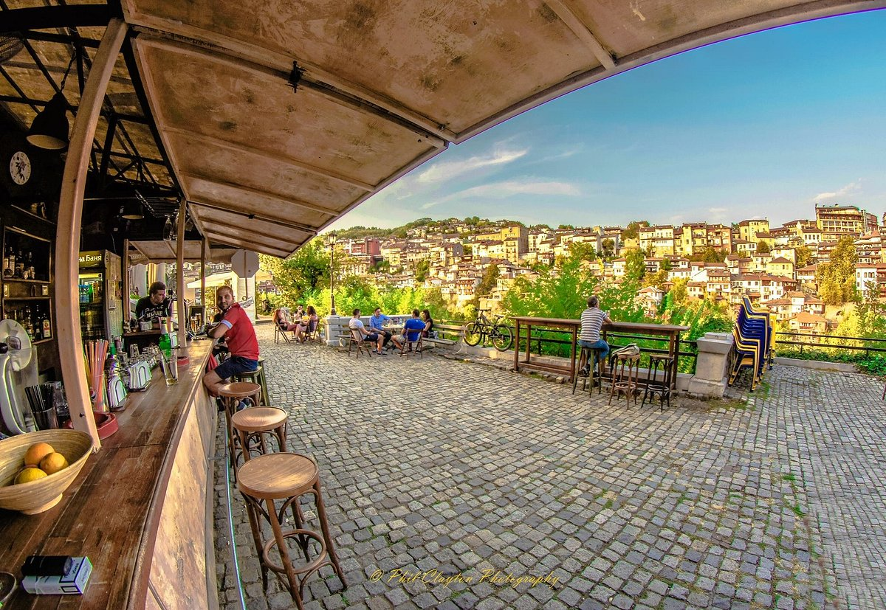
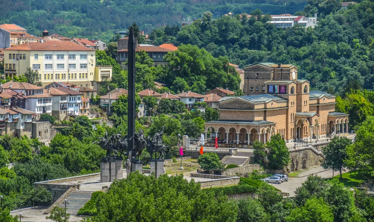
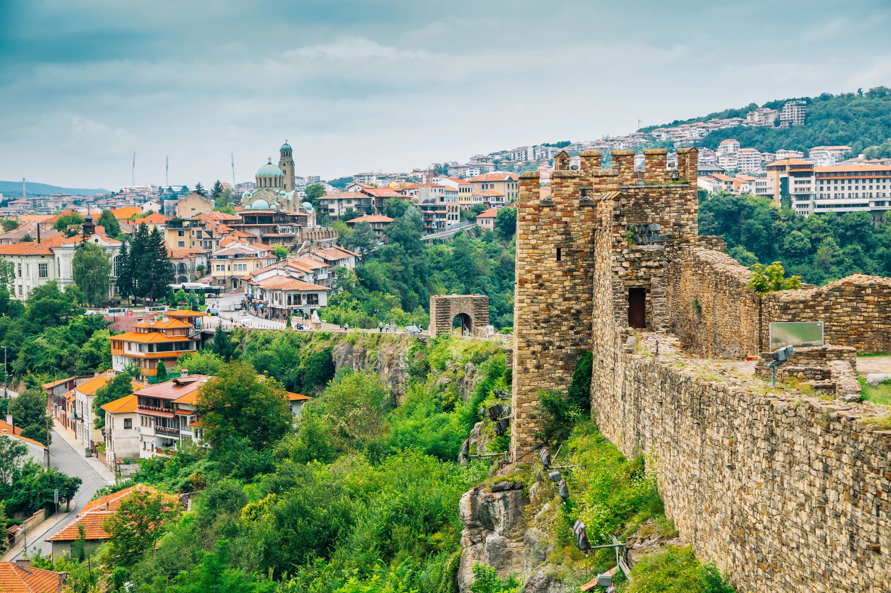
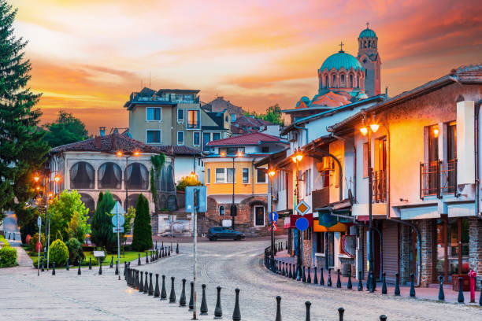
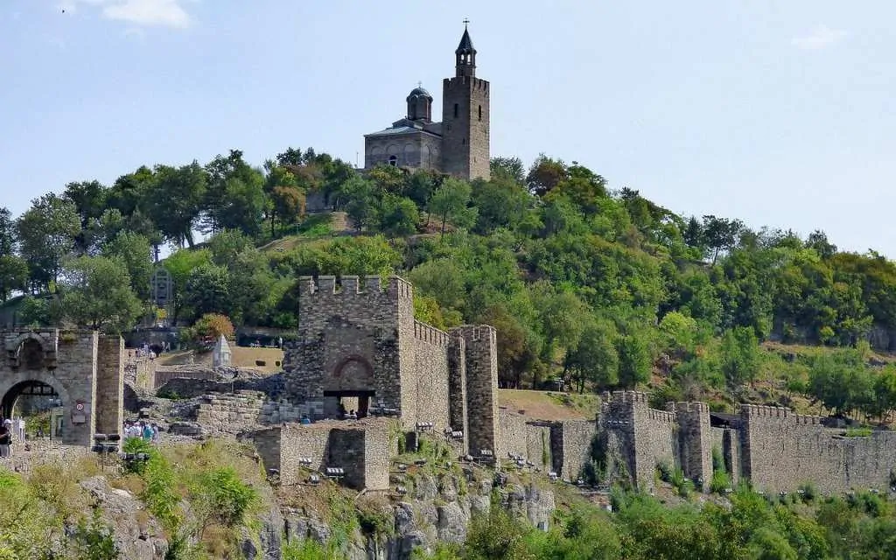
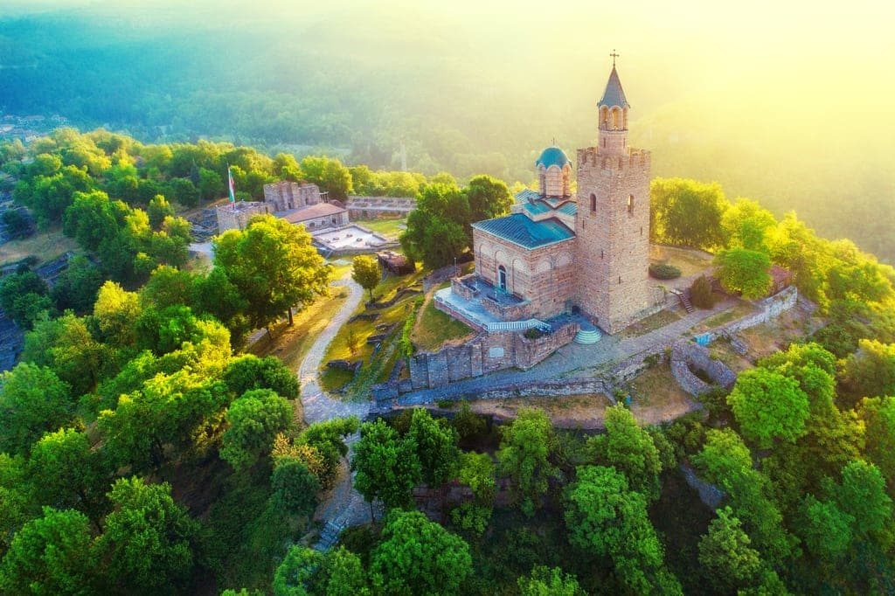
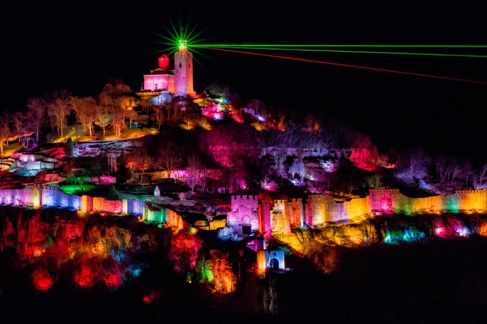

Галерия









Започва основният ремонт на улица Опълченска във Велико Търново, явяваща се и северен вход на града. Дейностите стартират с реконструкция на напорния тръбопровод, канализационния колектор и на уличния водопровод. След ...
Във връзка с подготовката, организиране и провеждане на Маратон Търново Ултра се въвежда временна организация и безопасност на движението в ...
Маратонът в България стартира този уикенд във Велико Търново. Състезанието Търново Ултра 2024 дава началото на сезона, рекорден е броят на участниците близо 2000. Събитието събира в старопрестолния град едни ...
Започна асфалтирането на улица Теодосий Търновски в кв. Света гора . От днес се работи в района на студентските общежития, и ще продължи до ...